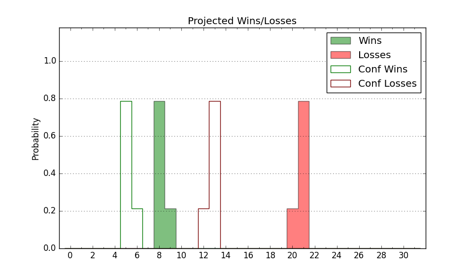

| Home | Game Probabilities | Conferences | Preseason Predictions | Odds Charts | NCAA Tournament |
| City: | Hattiesburg, Mississippi | |
| Conference: | Sun Belt (12th)
| |
| Record: | 5-12 (Conf) 8-20 (Overall) | |
| Ratings: | Comp.: -12.8 (298th) Net: -12.8 (297th) Off: 96.4 (335th) Def: 109.2 (228th) SoR: 0.0 (116th) |
| Remaining | ||||||
|---|---|---|---|---|---|---|
| Date | Opponent | Win Prob | Pred. | |||
| 2/28 | Troy (104) | 22.1% | L 66-75 | |||
| Previous | Game Score | |||||
| Date | Opponent | Win Prob | Result | Off | Def | Net |
| 11/4 | Bowling Green (290) | 63.4% | W 77-68 | -4.5 | 8.7 | 4.2 |
| 11/7 | @UAB (113) | 8.5% | L 84-98 | 6.3 | 0.0 | 6.4 |
| 11/20 | @South Dakota St. (105) | 7.8% | L 76-101 | -4.3 | -5.1 | -9.4 |
| 11/24 | @Montana St. (187) | 16.1% | L 59-79 | -13.8 | 1.6 | -12.2 |
| 11/25 | (N) Abilene Christian (234) | 35.1% | L 74-82 | 15.8 | -22.4 | -6.6 |
| 11/30 | Milwaukee (145) | 31.2% | W 66-65 | 4.2 | 8.7 | 12.9 |
| 12/5 | Alabama St. (314) | 69.1% | W 81-64 | 4.5 | 12.9 | 17.5 |
| 12/10 | @Tulane (149) | 12.0% | L 58-86 | -11.2 | -8.7 | -19.9 |
| 12/14 | (N) Mississippi (31) | 3.0% | L 46-77 | -13.6 | -0.6 | -14.3 |
| 12/17 | Lamar (188) | 39.7% | L 65-69 | 0.7 | 2.9 | 3.6 |
| 12/21 | Marshall (186) | 39.3% | W 68-66 | 22.2 | -7.6 | 14.6 |
| 1/2 | @James Madison (151) | 12.3% | L 72-83 | 11.1 | -2.1 | 9.0 |
| 1/4 | @Old Dominion (334) | 46.9% | L 71-74 | 4.4 | -3.4 | 1.0 |
| 1/9 | Louisiana Monroe (345) | 78.8% | W 84-67 | -5.6 | 5.1 | -0.5 |
| 1/11 | Texas St. (197) | 41.7% | W 92-88 | 0.5 | 4.3 | 4.8 |
| 1/15 | @South Alabama (136) | 10.6% | L 62-75 | -3.1 | 4.1 | 1.0 |
| 1/18 | @Texas St. (197) | 17.4% | L 82-85 | 2.0 | 11.9 | 13.9 |
| 1/25 | @Louisiana Lafayette (320) | 41.4% | W 67-59 | -0.2 | 13.0 | 12.8 |
| 1/27 | @Troy (104) | 7.7% | L 61-70 | -7.4 | 15.4 | 8.0 |
| 1/29 | Arkansas St. (94) | 18.9% | L 68-81 | 1.9 | -5.6 | -3.7 |
| 2/1 | Georgia Southern (260) | 56.6% | W 72-68 | -4.7 | 8.7 | 4.1 |
| 2/5 | @Appalachian St. (154) | 12.4% | L 58-60 | -2.9 | 17.4 | 14.6 |
| 2/8 | @Ball St. (272) | 29.8% | L 76-77 | 6.4 | -1.6 | 4.8 |
| 2/12 | @Arkansas St. (94) | 6.4% | L 67-101 | -0.1 | -18.6 | -18.6 |
| 2/15 | @Louisiana Monroe (345) | 52.3% | L 74-81 | -2.8 | -8.0 | -10.8 |
| 2/20 | Coastal Carolina (310) | 68.3% | L 78-87 | -10.2 | -9.8 | -20.0 |
| 2/22 | Louisiana Lafayette (320) | 70.6% | L 60-62 | -13.1 | 1.0 | -12.1 |
| 2/26 | South Alabama (136) | 28.8% | L 82-88 | 19.3 | -18.9 | 0.4 |
| Stats & Trends | |||||
|---|---|---|---|---|---|
| Current | Day | Week | Month | Season | |
| Composite | -12.8 | -0.0 | -0.6 | -3.0 | -5.8 |
| Comp Rank | 298 | -2 | -9 | -32 | -66 |
| Net Efficiency | -12.8 | -0.0 | -0.5 | -2.8 | -- |
| Net Rank | 297 | -2 | -9 | -31 | -- |
| Off Efficiency | 96.4 | +0.0 | +0.1 | -0.7 | -- |
| Off Rank | 335 | -- | -1 | -23 | -- |
| Def Efficiency | 109.2 | -0.0 | -0.6 | -2.2 | -- |
| Def Rank | 228 | -4 | -15 | -28 | -- |
| SoS Rank | 220 | -- | -23 | -29 | -- |
| Exp. Wins | 8.2 | -0.0 | -1.0 | -2.7 | -4.1 |
| Exp. Conf Wins | 5.2 | -0.0 | -1.0 | -2.7 | -2.8 |
| Conf Champ Prob | 0.0 | -- | -- | -- | -3.8 |

| Advanced Stats | ||
|---|---|---|
| Stat | Value | Rank |
| Off Eff FG % | 0.482 | 271 |
| Off Ast Ratio | 0.148 | 162 |
| Off ORB% | 0.252 | 274 |
| Off TO Rate | 0.173 | 329 |
| Off FT Ratio | 0.326 | 183 |
| Def Eff FG % | 0.529 | 239 |
| Def Ast Ratio | 0.155 | 253 |
| Def ORB% | 0.282 | 165 |
| Def TO Rate | 0.143 | 201 |
| Def FT Ratio | 0.358 | 244 |